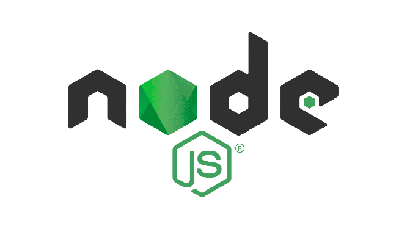

O Node.js foi criado pelo pesquisador Ryan Dahl, no ano de 2009 ao decorrer de uma análise de páginas da web e a maneira como funcionavam.
Ryan, percebeu que as aplicações eram mal utilizadas e ineficientes o modo que usuários lidavam com os recursos da máquina, consumindo mais recursos de processamento que o necessário.
Em uma aplicação web tradicional, é comum a sobrecarga de requisições, o que muitas vezes gera o bloqueio por carregamentos de arquivos ou processamentos pesados e por isso, o pesquisador entendeu a necessidade de criar o Node.js.
O fato do Node ser single thread é um diferencial no desenvolvimento, são chamados fluxos de execução, o que simplifica o processo de demanda evitando a interrupção.
Desenvolvida a partir da tecnologia V8 Engine e do Javascript, cujo o propósito é acelerar o desempenho de uma aplicação, o Node.js é portável pelas plataformas Windows, Mac e Linux, possibilitando a elaboração de diferentes aplicações Web e utilizando apenas um código em Javascript.
Portanto, as demandas que surgem por parte da internet e a forma que o código em JavaScript pode ser construído, proporciona inúmeras possibilidades de desenvolvimentos a serem feitos na Web, o que torna o Node.js uma plataforma colaborativa, ágil e possui as seguintes características:
Nos últimos 29 anos, com a corrida dos navegadores, conhecidos como “browsers”, a internet se tornou cada vez mais disputada, ampliando o campo da informação. Por isso, Tim Berners-Lee criou o primeiro navegador, nomeado WorldWideWe, no ano de 1990 e além de cientista da computação, foi um dos precursores no uso do hipertexto, com intuito de compartilhar informações.
Consequentemente, com a expansão de informações era preciso um software que possibilitasse a busca por elas e então, surgem diferentes navegadores, o que era necessário, num mundo como esse, estar online é se informar.
Ryan, percebeu que as aplicações eram mal utilizadas e ineficientes o modo que usuários lidavam com os recursos da máquina, consumindo mais recursos de processamento que o necessário.
Em uma aplicação web tradicional, é comum a sobrecarga de requisições, o que muitas vezes gera o bloqueio por carregamentos de arquivos ou processamentos pesados e por isso, o pesquisador entendeu a necessidade de criar o Node.js.
O fato do Node ser single thread é um diferencial no desenvolvimento, são chamados fluxos de execução, o que simplifica o processo de demanda evitando a interrupção.
Desenvolvida a partir da tecnologia V8 Engine e do Javascript, cujo o propósito é acelerar o desempenho de uma aplicação, o Node.js é portável pelas plataformas Windows, Mac e Linux, possibilitando a elaboração de diferentes aplicações Web e utilizando apenas um código em Javascript.
Portanto, as demandas que surgem por parte da internet e a forma que o código em JavaScript pode ser construído, proporciona inúmeras possibilidades de desenvolvimentos a serem feitos na Web, o que torna o Node.js uma plataforma colaborativa, ágil e possui as seguintes características:
- Responde às requisições das aplicaçõe
- Tecnologia gratuita e livre de licenças
- Front-end e Back-end
- Código aberto: possibilita uma comunidade ativa que contribui com o projeto
- Programação JavaScript: linguagem popular da web
- Performance: baixo consumo de memória e aproveitamento da CPU
Nos últimos 29 anos, com a corrida dos navegadores, conhecidos como “browsers”, a internet se tornou cada vez mais disputada, ampliando o campo da informação. Por isso, Tim Berners-Lee criou o primeiro navegador, nomeado WorldWideWe, no ano de 1990 e além de cientista da computação, foi um dos precursores no uso do hipertexto, com intuito de compartilhar informações.
Consequentemente, com a expansão de informações era preciso um software que possibilitasse a busca por elas e então, surgem diferentes navegadores, o que era necessário, num mundo como esse, estar online é se informar.